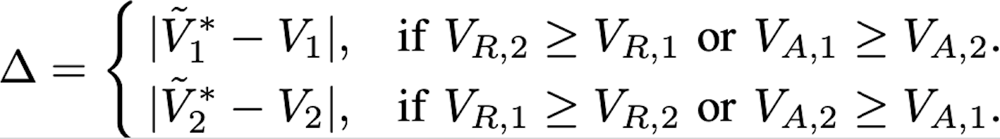
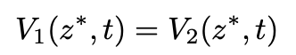
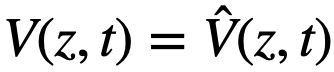
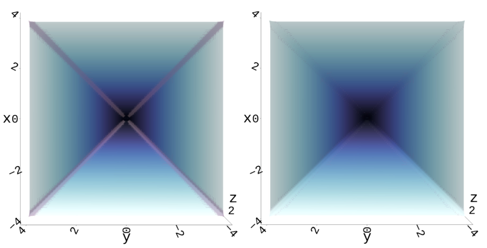
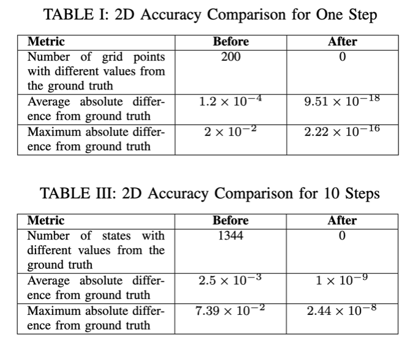
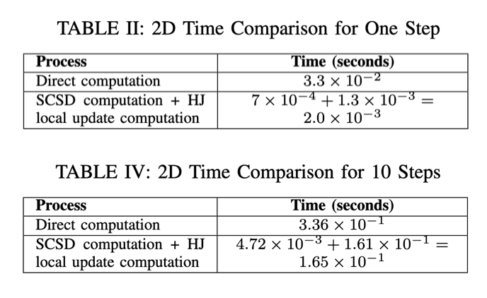
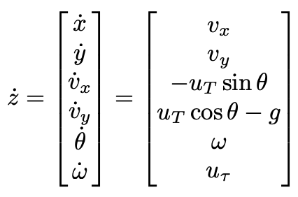

School of Computing Science, Simon Fraser University, Burnaby, BC, Canada
Hamilton-Jacobi (HJ) Reachability is widely used to compute value functions for states satisfying specific control objectives. However, it becomes intractable for highdimensional problems due to the curse of dimensionality. Dimensionality reduction approaches are essential for mitigating this challenge, whereas they could introduce the “leaking corner issue”, leading to inaccuracies in the results. In this paper, we define the “leaking corner issue” in terms of value functions, propose and prove a necessary condition for its occurrence. We then use these theoretical contributions to introduce a new local updating method that efficiently corrects inaccurate value functions while maintaining the computational efficiency of the dimensionality reduction approaches. We demonstrate the effectiveness of our method through numerical simulations. Although we validate our method with the self-contained subsystem decomposition (SCSD), our approach is applicable to other dimensionality reduction techniques that introduce the “leaking corners”.
We proved that "leaking corner issue" will only happen at the places where the value difference between sub-value functions is smaller than certain threshold.
Theorem 1: We can find the set of leaking corners L(t) by comparing the (full-dimensional) sub-value functions.
L(t) = {z : |V1(z, t) − V2(z, t)| < ∆}.
The value of ∆ is
For detailed illustration, please refer to the paper or presentation.
Starting from where the values from sub-systems are equal:
 .Eventually, we will reach a place where the values do not need to be corrected.
 .In Algorithm 1, neighbor(z) returns a set of states that are adjacent to the state z. Every island of the “leaking corners” will be included, and every “leaking corner” is covered using our formula. The algorithm keeps checking the neighboring states of the leaking corners detected for every time step. It makes sure that all the leaking corners are covered with the updating procedure.
2D and 6D examples demonstrate that: (1) Theorem 1 locates the “leaking corners.” (2) The local updating process in Algorithm 1 produces results equivalent to the ground truth while maintaining computational efficiency.
The experiment was conducted on a system with 96.0 GB of memory, an AMD Ryzen 9 5950X 16-core processor (32 threads), and Ubuntu 22.04.3 LTS as the operating system. We use the highly parallelized Optimized_dp for computation.
System Dynamics: 2D Single Integrator
The initial value function for subsystem 1 is ϕ1(x1, 0) = ℓ1(x1) = |x| − 1, and for subsystem 2, it is ϕ2(x2, 0) = ℓ2(x2) = |y| − 1. The initial value function for the full-dimensional system is given by V (z, 0) = max{ℓ1(x1), ℓ2(x2)} The grid consists of 101×101 points with each dimension ranging from −4 to 4..
The 2 figures illustrate the value functions. The left figure displays the approximated value function, with the leaking corners” L(t)—where the values deviate from the ground truth—highlighted in gray. The right figure shows the value function after applying our correction method, where no “leaking corners” remain, demonstrating the effectiveness of our method in aligning with the ground truth.
 System Dynamics: 6D Planar Quadrotor
The system dynamics is:
.Using the SCSD method, the dynamics could be decomposed into 2 subsystems. Subsystem 1 has the dynamics:
and subsystem 2 has the dynamics:
The left figure demonstrates the local updating results for the backward computation of 0.02 seconds with ∆ = 0.04, 0.06 seconds with ∆ = 0.1212 and 0.1 seconds with ∆ = 0.204. The dimensions shown are x and y. We take a slice of vx = −1, vy = −1, θ = 0, and ω = 0.4.
@article{he2025threshold,
title={Threshold Strategy for Leaking Corner-Free Hamilton-Jacobi Reachability with Decomposed Computations},
author={He, Chong and Mariappan, Mugilan and Vora, Keval and Chen, Mo},
journal={arXiv preprint arXiv:2505.10020},
year={2025}
}